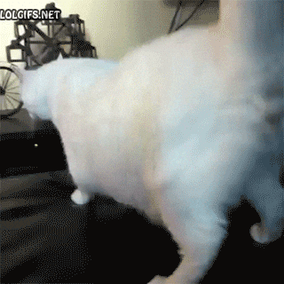

P2JB
A 'system software error' at the END of the run is NORMAL - it is the
console tearing down a socket this exploit deliberately left pointing at a live kernel
object. Press OK. The payload / ELF page loads straight after you dismiss it.
DO NOT TURN THE CONSOLE OFF during the ~55 minute leak, or during the
DRAINING and TOP-UP stage that follows it. The screen looks idle for a long time on
purpose - that is normal. Wait until the payload menu appears.
idle
Open this page with ?go=1 to arm it. Nothing runs
otherwise.